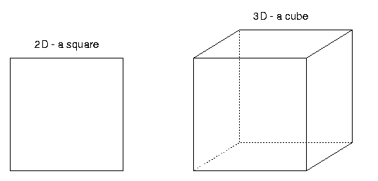
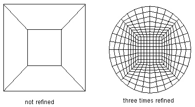

All numerics are done on a grid. Choosing the right kind of grid can be essential for solving your problem. A grid should be chosen to fit your problem space in the best way possible. This chapter describes coarse grids for the triangulation of your domain.
deal.II offers three fundamental grid types: a hypercube, a hyperball and a hyper_L. Furthermore it is possible to read a triangulation from a ucd-file.
A hypercube can be created using the function
void Triangulation::create_hypercube(const double left=0.,const double right=1.)
The cube created is the tensor product of the left and right edges which
default to 0 and 1, creating the unit hypercube. The hypercube will consist of
exactly one cell. In two dimensions, this amounts to a unit square, in three, to a unit cube.
|  |
Example - create the square [-1,-1]x[-1,1]: Below we show the includes, definitions and function calls needed. Be sure to use them in their appropriate places.
#include <grid/tria.h>
const unsigned int dim=2; // Two dimensions; to create a cube set to three
Triangulation<dim> tr;
tr.create_hypercube(-1,1);
A hyperball can be created using the function
void Triangulation::create_hyper_ball(const Point<dim> center=0.,const double radius=1.)
This will create a hyperball of given centre and radius where the location of the centre defaults to the origin and the radius to unity.
|  |
Example: Below we show the includes, definitions and function calls needed. Be sure to use them in their appropriate places. This example will create a hyperball with unit radius centred on (1,0).
#include <grid/tria.h>
#include <base/point.h>
const unsigned int dim=2; // For example
Triangulation<dim> tr;
Point<dim> centre(1,0); // Taking (1,0) as the centre of the ball
tr.create_hyperball(centre,1);
A hyper-L can be created using the function
void Triangulation::create_hyper_L(const double left=-1.,const double right=1.)
This will create a hyper-L consisting of 2dimension-1 cells.
The hyper-L is created from the hypercube [left,right]dimension by taking
away the hypercube [left+right/2,right]dimension.
Use of the hyper-L:
The hyper-L is mainly of use in testing grid refinement, error estimates etc.
Boundary conditions of the form u=g on the faces of the original
hypercube and ∂nu=0 on the "inner" faces resulting
from the smaller hypercube taken away are chosen, this will usually lead to
a singular solution because of the reentrant corner; these singularities
can be used to test the efficiency of error estimators.
|
|
Example: Below we show the includes, definitions and function calls needed. Be sure to use them in their appropriate places. This example will create the default hyper-L.
#include <grid/tria.h>
const unsigned int dim=2; // For example
Triangulation<dim> tr;
tr.create_hyper_L(-1,1);
In many problems taken from real life you will find those grid types
insufficient and you will need to create your own grid. Fortunately,
this is possible. deal.II offers the possibility of
reading a complete triangulation from a file in the ucd-format
used by avs. A ucd-file can be read with the function
void DataIn::read_ucd(istream&)
Vertex numbering in input files:
The vertex numbering must start at the vertex with the lowest number for lines
and be counterclockwise for quads. Also, faces between adjacent cells
must face in the same direction. This must be ensured by you, or by the
grid construction algorithm. Otherwise some of your matrix elements
may have the wrong sign (plus instead of minus or vice versa).
A more detailed description of the problems
encountered in two dimensions can be found in the
DataIn class description.
Another way to build cutom grids is to use deal.II methods for creating grid cells and their properties. This is done in the order
Example: Below we show the includes, definitions and function calls needed. Be sure to use them in their appropriate places. This example will create a triangulation as shown in this figure. It will work only in two dimensions. It creates three rectangular cells, the leftmost boundary is a Neumann-boundary.
// First, create an array holding the (2-dimensional) vertices
const Point<2> vertices[8] = { Point<2> (0,0),
Point<2> (1,0),
Point<2> (1,1),
Point<2> (0,1),
Point<2> (2,0),
Point<2> (2,1),
Point<2> (3,0),
Point<2> (3,1) };
// Next, create a two-dimensional array holding the information
// on what cell consists of which vertices
const int cell_vertices[3][4] = {{0, 1, 2, 3},
{1, 4, 5, 2},
{4, 6, 7, 5}};
// Next, create a vector of type CellData<2> that holds the
// cells
vector<CellData<2> > cells (3, CellData<2>());
// The information on the cells is copied into this vector and the
// material is set to 0. This index can be used to distinguish cells
// of different types.
for (unsigned int i=0; i<3; ++i)
{
for (unsigned int j=0; j<4; ++j)
cells[i].vertices[j] = cell_vertices[i][j];
cells[i].material_id = 0;
};
// The Neumann boundary is set below:
// Boundaries are parts of cells, therefore the class is called SubCellData
// to distinguish them from cell data like vertices and material.
SubCellData boundary_info;
// We are using a boundary of cell number 1
boundary_info.boundary_lines.push_back (CellData<1>());
// The boundary gets a material id of
boundary_info.boundary_lines.back().material_id = 1;
// The boundary is between vertices number 1 and 3
boundary_info.boundary_lines[0].vertices[0] = 0;
boundary_info.boundary_lines[0].vertices[1] = 3;
// From this information the triangulation is created
coarse_grid->create_triangulation (vector<Point<2> >(&vertices[0],
&vertices[8]),
cells, boundary_info);
| Next chapter: Degrees of Freedom | Back to this chapter's index | Back to the tutorial index |
Last modified: $Date$